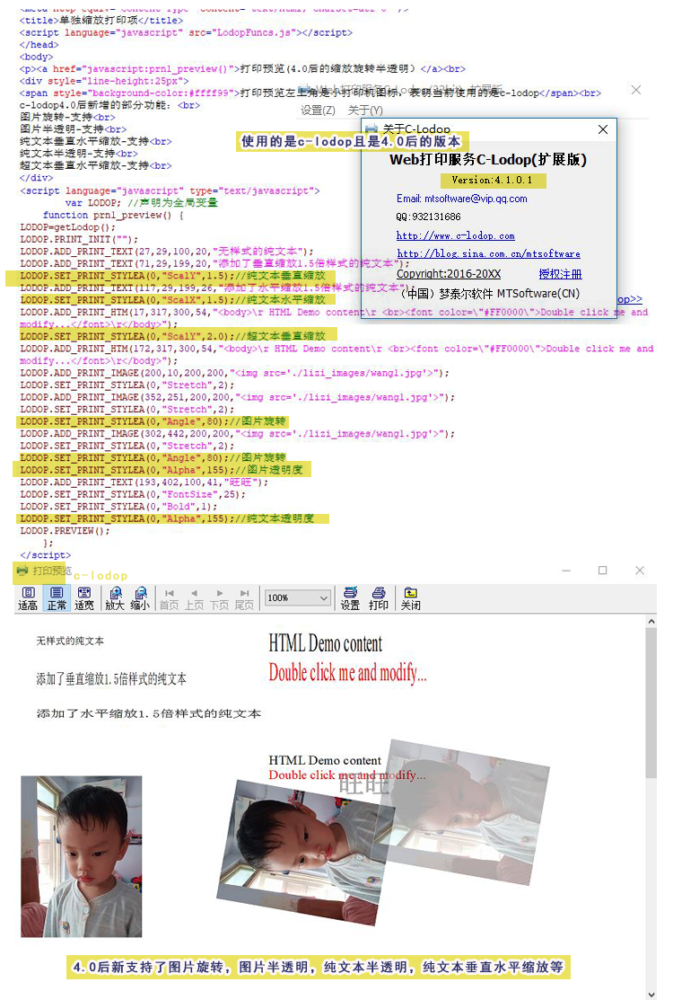

单独缩放打印，项旋转，半透明
新版的c-lodop除了增加可以打印pdf的功能，还增加了一些其他功能，这里测试下增加的其中三个功能：单个打印项拉伸缩放，旋转，半透明。简短问答：
1、怎么把字体纵向拉伸一下，瘦长的那种字体。
官网下载中心，下载最新的C-lodop
http://www.c-lodop.com/download.html
并参考http://www.c-lodop.com/blogs/Blog021.html
对文本进行垂直缩放，例如：
LODOP.SET_PRINT_STYLEA(0,"ScalY",1.5);//垂直缩放1.5倍
2.如何旋转图片 官网下载中心，下载最新的C-lodop
http://www.c-lodop.com/download.html
并参考http://www.c-lodop.com/blogs/Blog021.html
例如：
LODOP.SET_PRINT_STYLEA(0,"Angle",45); //逆时针旋转45度
3.如何设置半透明的水印 官网下载中心，下载最新的C-lodop
http://www.c-lodop.com/download.html
并参考http://www.c-lodop.com/blogs/Blog021.html
例如：
LODOP.SET_PRINT_STYLEA(0,"Alpha",128);/这个例子的透明度值设置为128，真正意义上的"半"透明
--简短问答结束----
1.拉伸。
之前有客户想要拉伸add_print_text文本，那时候还无法实现，c-lodop4.63之后的版本都有可以拉伸单个打印项的功能，该文测试了下常见的纯文本和超文本的拉伸。
之前有整页缩放，宽度溢出缩放，高度溢出缩放等，都是对整页进行的缩放，新版本也可以对单个打印项进行拉伸缩放了，也可以单个方向，只高度拉伸或只宽度拉伸。
LODOP.SET_PRINT_STYLEA(0,"ScalY",1.5);//垂直缩放1.5倍
LODOP.SET_PRINT_STYLEA(0,"ScalX",1.5);//水平缩放1.5倍
3.旋转图片
c-lodop4.63之后的版本可以对所有打印项旋转，图片打印项也可以旋转了。
该旋转语句之前是可以旋转纯文本的，最新版加了这个功能，所有打印项都可以旋转，如果以前写的代码中有给不能旋转的打印项添加了旋转样式，那时候样式没生效，调整对了样式，用最新版可能会出现样式改变问题，如果发现问题，注意删除原来的没生效的那些旋转样式。
3.半透明的内容
之前有人想打半透明的水印，那时候纯文本不能半透明，只能把水印改成背景，目前c-lodop4.63之后的版本可以对纯文本进行半透明了，图片也可以半透明。
半透明可以通过上层的内容透到下方。
不过该半透明也需要实际测试打印机是否支持，有客户反馈打印出来只有黑白的，没有浅色的，透明的也不透明。
如果实际测试打印机支持这个半透明，可以使用。
测试例子地址：4.0后缩放旋转打印项等
测试代码：
<script language="javascript" src="LodopFuncs.js"></script> </head> <body> <p><a href="javascript:prn1_preview()">打印预览(4.0后的缩放旋转半透明）</a><br> <div style="line-height:25px"> <span style="background-color:#ffff99">打印预览左上角是小打印机图标，表明当前使用的是c-lodop</span><br> c-lodop4.0后新增的部分功能：<br> 图片旋转-支持<br> 图片半透明-支持<br> 纯文本垂直水平缩放-支持<br> 纯文本半透明-支持<br> 超文本垂直水平缩放-支持<br> </div> <script language="javascript" type="text/javascript"> var LODOP; //声明为全局变量 function prn1_preview() { LODOP=getLodop(); LODOP.PRINT_INIT(""); LODOP.ADD_PRINT_TEXT(27,29,100,20,"无样式的纯文本"); LODOP.ADD_PRINT_TEXT(71,29,199,20,"添加了垂直缩放1.5倍样式的纯文本"); LODOP.SET_PRINT_STYLEA(0,"ScalY",1.5);//纯文本垂直缩放 LODOP.ADD_PRINT_TEXT(117,29,199,26,"添加了水平缩放1.5倍样式的纯文本"); LODOP.SET_PRINT_STYLEA(0,"ScalX",1.5);//纯文本水平缩放 LODOP.ADD_PRINT_HTM(17,317,300,54,"<body>\r HTML Demo content\r <br><font color=\"#FF0000\">Double click me and modify...</font>\r</body>"); LODOP.SET_PRINT_STYLEA(0,"ScalY",2.0);//超文本垂直缩放 LODOP.ADD_PRINT_HTM(172,317,300,54,"<body>\r HTML Demo content\r <br><font color=\"#FF0000\">Double click me and modify...</font>\r</body>"); LODOP.ADD_PRINT_IMAGE(200,10,200,200,"<img src='./lizi_images/wang1.jpg'>"); LODOP.SET_PRINT_STYLEA(0,"Stretch",2); LODOP.ADD_PRINT_IMAGE(352,251,200,200,"<img src='./lizi_images/wang1.jpg'>"); LODOP.SET_PRINT_STYLEA(0,"Stretch",2); LODOP.SET_PRINT_STYLEA(0,"Angle",80);//图片旋转 LODOP.ADD_PRINT_IMAGE(302,442,200,200,"<img src='./lizi_images/wang1.jpg'>"); LODOP.SET_PRINT_STYLEA(0,"Stretch",2); LODOP.SET_PRINT_STYLEA(0,"Angle",80);//图片旋转 LODOP.SET_PRINT_STYLEA(0,"Alpha",155);//图片透明度 LODOP.ADD_PRINT_TEXT(193,402,100,41,"旺旺"); LODOP.SET_PRINT_STYLEA(0,"FontSize",25); LODOP.SET_PRINT_STYLEA(0,"Bold",1); LODOP.SET_PRINT_STYLEA(0,"Alpha",155);//纯文本透明度 LODOP.PREVIEW(); }; </script> </body>图示：
